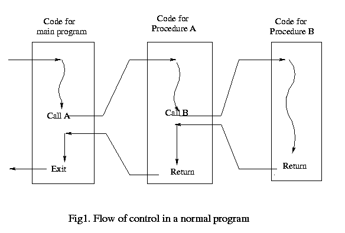
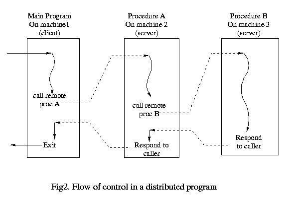

Computer Networks
Prev |
Next |
Index
Distributed Applications
We can use any of the following two approaches in designing a distributed application.
- Communication-Oriented Design: Begin with the communication protocol. Design a message format and syntax. Design the client and server components by specifying how each reacts to in-coming messages and how each generates outgoing meassages.
- Application-Oriented Design: Begin with the application. Design a conventional application program to solve the problem. Build and test a working version of the conventional program into two or more pieces, and add communication protocols that allow each piece to execute on a separate computer.
Semantics of Applications
- Normal Application: A main program which may call procedures defined within the program (proc A in this case). On return from this procedure the program continues. This procedure (proc A) may itself call other procedures (proc B in this case). Refer to the figure below:

- Distributed Application: A client program executing on a machine 1 may call a procedure (proc A) which is defined and run on another machine ( we say server for machine 1 is machine 2) upon return from the call the program on machine 1 continues. The server program on machine 2 may in turn act as a client and call procedures on another machine3 (now machine 3 is a server for machine 2). Refer to the figure below:

Passing Arguments in Distributed Programs
Problem: Incompatibility in argument storage
For example, some machines may use 7 bit for storing characters while some others might use 8 bit, some machines may use Big-endian representation while others might use Small-endian representation.
Possible Solutions
- One solution may be to find out the architecture of receiving end, convert the data to be sent to that architectue and then send the data. However, this will lead to following problems:
- It is not easy to find out the architecture of a machine.
- If I change the architecture of my machine then this information has to be conveyed to the client.
- Another solution is to have a standard format for networks. This may lead to inefficiency in the case when the two communicating machines have the same architecture beacuse in this case the conversion is unnecessary.
XDR (External Data Representation)
XDR was the solution adopted by SUN RPC. RPC was mainly the outcome of the need for distributed filesystems(NFS).
Buffer Paradigm
The program allocates a buffer large enough to hold the external representation of a message and adds items one at a time. The library routine invoked to allocate space for the buffer is xdr_mem_create . After allocating space we may append data to this buffer using various conversion library routines like xdr_int (xdr_int coverts an integer to it's external representaion and appends it to the buffer) to convert native objects to external representaion and then append to the buffer. After all the data to be passed has been converted and appended we send the buffer.
ASN.1
First add the information related to the the data being sent to the buffer and then append the data to the buffer. For example, to send a character followed by an integer (if the sending machine uses one byte for char and two bytes for integers) we send the information as - one byte char, two byte integer ...
The routines for encoding and decoding are the same, depending on the type of the buffer which may be (specified at the time fo allocating space for the buffer) XDR_ENCODE or XDR_DECODE encoding or decoding are performed respectively.
For the routine xdr_int(xdrs, &i)
- If the allocation was done as xdr_mem_create(xdrs, buf, BUFSIZE, XDR_ENCODE) then the value obtained by converting i to its external representation would be appended to the buffer.
- If the allocation was done as xdr_mem_create(xdrs, buf, BUFSIZE, XDR_DECODE) then an integer will be extracted , decoded , and the value will be stored in the variable i.
There are routines (like xdr_stdin_create) to write/read from sockets and file descriptors.
back to top
Prev| Next |
Index